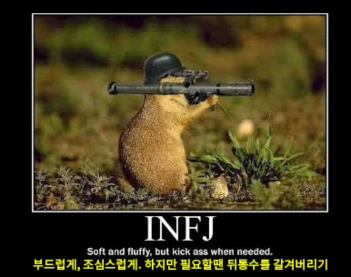

- intp
- infp
- infj
infj
통찰력 있는 선지자, 예언자형
인내심이 많고 통찰력과 직관력이 뛰어나며 화합을 추구한다.
창의력이 좋으며, 성숙한 경우엔 강한 직관력으로 타인에게 말없이 영향력을 끼친다.
독창성과 내적 독립심이 강하며, 확고한 신념과 열정으로 자신의 영감을 구현시켜 나가는 정신적 지도자들이 많다.
나무보다 숲을 본다.
한곳에 몰두하는 경향으로 목적 달성에 필요한 주변적인 조건들을 경시하기 쉽고, 자기 내부의 갈등이 많고 복잡하다. 이들은 풍부하고 감성적인 내적인 성격을 갖고 있다.
